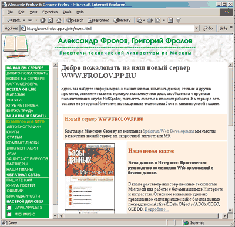
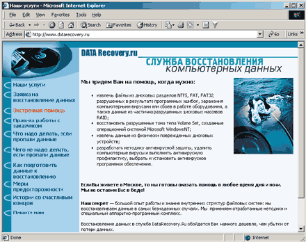
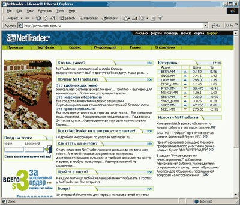
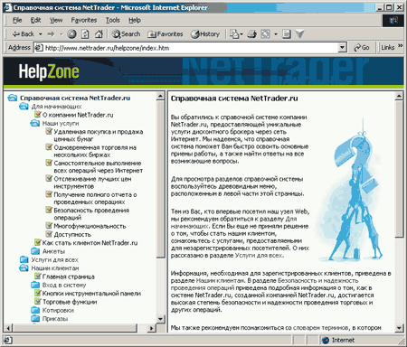
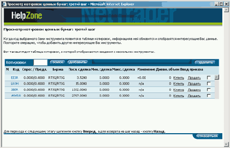
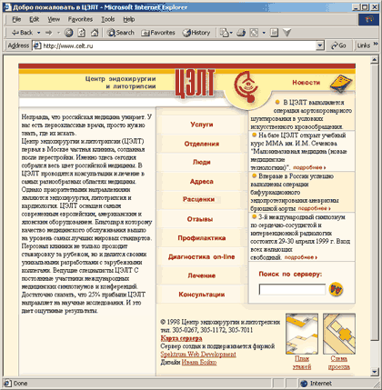
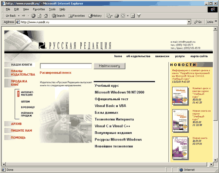
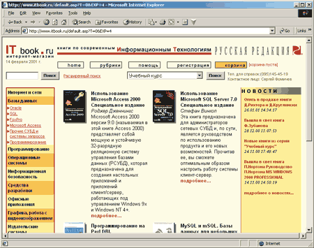
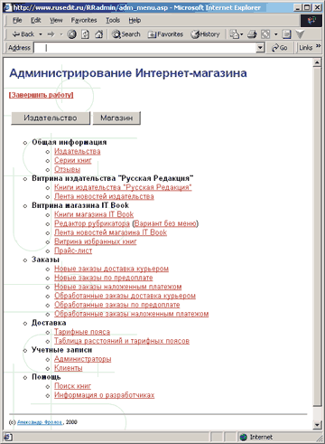

alexandre@frolov.pp.ru;
http://www.frolov.pp.ru, http://www.datarecovery.ru
В статье использованы отрывки из новой книги А. и Г. Фроловых "Создание Web-приложений", которая выйдет в издательстве компьютерной литературы "Русская Редакция".
В последние годы XX века появился и приобрел огромную популярность новый класс приложений - так называемые Web-приложения. Обеспечивая доступ через Интернет или интрасеть к информационным системам и базам данных, Web-приложения становятся одним из наиболее эффективных инструментов ведения современного бизнеса.
Сегодня все большее и большее количество отечественных и зарубежных компаний проявляют интерес к бизнесу в Интернете. Причина этого - возможность предлагать товары и услуги по всему миру, не затрачивая на это огромные финансовые средства. Именно поэтому такая область программной индустрии, как создание Web-приложений, приобретает сегодня особое значение.
Наиболее распространенные области применения Web-приложений - это Интернет-магазины, биржи, электронные конференции (доски объявлений), системы общения в реальном времени, предназначенные для обмена информацией между пользователями Интернета, системы видеоконференций, проводимых в Интернете, Интернет-телефония и т.д.
По архитектуре и принципам работы Web-приложения заметно отличаются от обычных программ, работающих на ПК, рабочих станциях или серверах локальной сети. Помимо того, что Web-приложения всегда должны работать в многопоточном и многопользовательском режиме, при их разработке необходимо также учитывать ненадежность каналов передачи данных Интернета, а также относительно невысокую в среднем скорость передачи данных по таким каналам.
Эти и некоторые другие особенности накладывают ограничения на технологии, применяемые при создании Web-приложений; как следствие, большинство хорошо проверенных и удобных методов и средств проектирования обычных приложений оказываются непригодными. Например, если нужно организовать доступ к базе данных через Интернет, то едва ли вам удастся ограничиться такими средствами быстрого проектирования приложений, как Borland Delphi, Microsoft Visual C++ или Microsoft Visual Basic (хотя отдельные компоненты Web-приложений можно создавать с применением этих инструментов).
Как правило, Web-приложения и различные программы, ориентированные на Интернет, предполагают взаимодействие клиентских программ (например, браузера) и сервера. При этом клиентские программы работают на компьютерах пользователей, возможно, недорогих или устаревших. Что же касается серверов, то для них применяются высокопроизводительные компьютеры, подключенные к Интернету быстрыми каналами передачи данных.
Иногда в прессе можно встретить утверждения о том, что со временем приложения, ориентированные на Интернет, вытеснят традиционные программы, такие как текстовые редакторы или электронные таблицы. На наш взгляд, если это и случится, то только тогда, когда рядовому пользователю станут по карману высокоскоростные каналы доступа в Интернет. Так что пока традиционные программы и приложения для Интернета не конкурируют, а органично дополняют друг друга. И такая ситуация, на наш взгляд, сохранится еще довольно долго.
Системы асимметричного доступа в Интернет (с применением модема и спутниковых технологий) позволяют "загружать" данные из Интернета в компьютер пользователя поистине с "космической" скоростью, исчисляемой сотнями килобайт в секунду. К сожалению, в обратном направлении данные идут намного медленнее, так как они проходят через модем и обычную телефонную линию. Так что, несмотря на значительное ускорение процесса загрузки файлов и просмотра Web-страниц, асимметричный спутниковый доступ все же не позволяет создавать полноценные Интернет-приложения, заменяющие многие привычные для вас программы.
Тем не менее для разработчика Web-приложений и программистов высокие скорости означают реальную возможность загрузки из Интернета программных продуктов и пакетов исправлений за приемлемое время.
Что же касается подключения к Интернету небольших и средних компаний, то сегодня вполне доступен по ценам высокоскоростной доступ по обычной телефонной линии с применением технологии асимметричных абонентских цифровых линий ADSL. На линиях ADSL достигается скорость получения данных из Интернета порядка 7,5 Мбит/с, а в обратном направлении - до 1,5 Мбит/с. Единственный недостаток - относительно высокая стоимость трафика.
Этапы создания Web-приложения
Хотя создание простейших Web-серверов и домашних Web-страниц доступно многим, разработка Web-приложений - непростая задача. Если для создания обычного приложения достаточно какого-либо одного инструментального средства (Microsoft Visual C++, Microsoft FoxPro, Inprise Delphi и т.п.), то Web-программисту намного труднее: ему приходится иметь дело со многими, подчас не вполне совместимыми между собой технологиями.
Из рис. 1 становится ясно, с чем придется столкнуться разработчику Web-приложений. На нем показаны возможные этапы создания типичного Web-приложения. Последовательность реализации этих этапов может быть разной (в зависимости от проекта), причем некоторые этапы могут выполняться одновременно.
 |
Рис. 1. Этапы создания Интернет-магазина.
|
Разработка проекта
Разумеется, создание нового Web-приложения необходимо начинать с разработки проекта. На этом этапе следует выяснить, что же, собственно, нужно сделать и каким именно образом. Хотя этап разработки проекта обычно выполняется в тесном взаимодействии с заказчиком, далеко не всегда заказчик представляет себе возможности Интернет-технологий и свои реальные потребности.
Не исключено, что заказчик сможет показать вам существующий Web-сайт, аналогичный по своему назначению тому, что ему требуется. Это избавит его от необходимости вникать в детали проекта, понятные вам, но неочевидные для него.
Хорошо, если у вас уже есть опыт создания проектов. Тогда вы сможете предложить заказчику готовое решение, которое можно использовать после некоторых доработок.
Регистрация доменного имени
Создавая в Интернете Web-сервер, необходимо придумать для него новое доменное имя. Оно должно быть по возможности легко запоминающимся и отражать либо название компании, либо информационное содержание сайта. Разумеется, выбранное вами доменное имя не должно быть зарегистрировано ранее.
Разработка дизайна
Очень важный этап - разработка дизайна. Дизайн определяет внешний вид приложения, в котором оно предстанет перед пользователями. Возможно, у заказчика уже имеется разработанный ранее фирменный стиль.
Заметим, что разработка хорошего дизайна под силу только специалисту (Web-дизайнеру), обладающему не только художественным вкусом, но и навыками работы с компьютерными инструментами, предназначенными для создания Web-страниц, изображений и анимации. Ограничения, накладываемые Web-приложениями, заставляют прибегать к специальным приемам, позволяющим, в частности, уменьшить размер файлов с рисунками и анимацией.
Размещение Web-сервера
Чтобы не заставлять посетителей долго ждать завершения загрузки страниц, ваш Web-сервер должен быть подключен к Интернету при помощи скоростного канала передачи данных. Такой канал стоит дорого, поэтому обычно Web-серверы размещаются на площадках провайдеров. Нет никакого резона размещать Web-сервер у себя дома, подключив его к Интернету через модем и телефонную линию.
Обычно Web-сервер, играющий роль ядра Web-приложения, размещается на территории провайдера Интернета или в помещении компании, подключенной к Интернету скоростным каналом связи. При этом для него не всегда нужно покупать отдельный компьютер - можно воспользоваться сервером провайдера. В этом случае ресурсы одного, как правило, мощного компьютера будут разделяться между несколькими Web-приложениями, возможно, принадлежащими разным лицам или компаниям.
Установка и настройка
Сложные Web-приложения обращаются к базам данных, а также выполняют автоматическую рассылку или обработку почты. Для выполнения процедур установки и настройки Web-серверов и серверов баз данных, а также почтовых серверов требуется квалификация системного администратора. Вы можете сделать эту работу самостоятельно или нанять специалиста в другой компании. Учтите, что Web-сервер, однажды установленный и запущенный, требует постоянного сопровождения и, соответственно, постоянных финансовых затрат.
Интеграция с платежными системами
Проектирование Интернет-магазина требует проработки вопроса об оплате товара. Поскольку в России кредитные карточки пока еще не слишком широко распространены, большинство Интернет-магазинов - это по сути системы сбора заказов. Оплата же выполняется банковским переводом денежных средств или каким-либо другим традиционным способом.
Если вы создаете Интернет-магазин с возможностью оплаты товара при помощи кредитных карточек, то необходимо проработать вопросы интеграции Web-приложения с одной из существующих платежных систем.
Разработка серверного и клиентского ПО
Такое сложное Web-приложение, интегрированное с базой данных, как Интернет-магазин, требует ежедневного обслуживания со стороны сотрудников магазина. Эти функции, а также функции обработки заказов и платежей возлагаются на работающее на сервере специальное Web-приложение, называемое еще бэк-офисом (поскольку оно не видно обычным посетителям Интернет-магазина, его работа происходит как бы "за сценой").
В противоположность бэк-офису, клиентская часть - это то самое Web-приложение, с которым работают посетители вашего Интернет-магазина или другого Web-приложения. Обычно оно намного проще серверного ПО, но к качеству его дизайна предъявляются повышенные требования.
Витрины в Интернет-магазине относятся к клиентскому ПО. Как и в обычном магазине, они предназначены для предоставления потенциальным покупателям полной информации о товаре, а также для отбора приобретаемого товара в корзину (разумеется, в Интернет-магазине используется специальная "электронная" корзина).
Обработка изображений и звука
Важным этапом в создании Web-приложения может стать обработка исходных материалов. Если Web-приложение содержит много изображений или звуковых файлов, предварительная обработка этого материала может представлять собой непростую задачу и занять много времени. Например, в книжном Интернет-магазине могут продаваться тысячи книг. При этом посетители должны иметь возможность ознакомиться с внешним видом обложки каждой книги, так что при заполнении витрины магазина предстоит отсканировать или добыть каким-либо другим образом тысячи изображений обложек.
Создание или приобретение компонентов
Как правило, нет нужды разрабатывать все компоненты Web-приложения самостоятельно, хотя некоторые нестандартные компоненты, реализующие, например, бизнес-логику, вы должны будете создать сами. Большинство же стандартных задач (например, отправка почтовых сообщений Web-сервером) уже решались много раз, поэтому можно найти готовые программные модули.
Готовые модули придется приобрести и для подключения к таким внешним системам, как платежные системы и биржи. Эти модули реализуют защищенные алгоритмы передачи данных (например, номеров кредитных карточек или приказов на приобретение или продажу ценных бумаг). Самостоятельная разработка таких модулей, как правило, чрезвычайно трудоемка, а порой даже невозможна.
Верстка статических страниц HTML
Для разработки Web-серверов, являющихся Web-приложениями, широко используется язык разметки гипертекста HTML. В большинстве случаев все, что видят посетители Web-сервера в окне браузера, представляет собой документы, составленные на языке HTML и содержащие внутри себя объекты различных типов (изображения, анимацию, формы для ввода информации и т.д.).
Если Web-сервер хранит только статическую информацию, изменяющуюся лишь эпизодически, он может содержать набор одних только статических документов HTML (а также графических иллюстраций, звуковых файлов и т.п.). Для создания таких документов можно использовать практически любой текстовый редактор (даже простейший Microsoft Notepad), хотя есть и мощные средства визуального проектирования страниц HTML.
Обычно статические страницы HTML создает Web-дизайнер, перерабатывая материал, полученный от заказчика. Этот процесс не требует никаких познаний в области программирования, но предполагает наличие художественного вкуса и навыков работы с программами обработки графики.
Для того чтобы ваш Web-сайт выглядел профессионально, необходимо тщательно отредактировать размещенные на нем текстовые материалы на предмет стилистических, синтаксических, грамматических и орфографических ошибок. Необходимо также следить за лексикой и в зависимости от назначения Web-сайта в той или иной степени нормировать употребление жаргонных выражений.
Программирование динамических страниц
В тех случаях, когда Web-сервер должен не только "поставлять" информацию своим посетителям, но и получать от них какие-либо данные или файлы, необходимо создавать так называемое активное Web-приложение. Помимо статических страниц HTML, такое приложение содержит компоненты, динамически создающие страницы HTML "на лету". Разработка таких компонентов требует обязательного участия профессионального программиста. Помимо традиционных языков программирования, таких как С++ или Pascal, Web-программист должен владеть языками, разработанными специально для проектирования Web-приложений: JavaScript, Visual Basic Scripting Edition, Perl, PHP и др.
Настройка процедур обслуживания
После запуска Web-приложения необходимо настроить такие процедуры обслуживания, как резервное копирование данных, хранящихся в СУБД, и файлов Web-сервера, рассылка новостей по электронной почте, фоновая статистическая обработка базы данных, автоматическое отслеживание работоспособности Web-сервера и т.п. Здесь потребуется квалификация программиста и системного администратора.
Тестирование и опытная эксплуатация
Известно, что любая более или менее сложная программа содержит ошибки. Web-приложения, как вы уже, наверное, поняли, весьма и весьма сложны. Возникающие в них ошибки могут носить случайный характер или проявляться только при высокой загруженности Web-сервера. Поэтому будьте готовы к тому, что наиболее коварные ошибки появятся уже после ввода системы в эксплуатацию. Наличие этапа опытной эксплуатации обязательно, и чем большее количество людей примет в нем участие, тем лучше.
Обучение персонала
Работа с бэк-офисом такого сложного Web-приложения, как Интернет-магазин, требует обучения сотрудников. Возможно, вам придется подготовить для них инструкции по выполнению тех или иных операций, например, добавления товара в базу данных, обработки заказов, печати счетов и т.п.
Организация рекламной кампании
Самый лучший Интернет-магазин останется без посетителей, если никто о нем не узнает. Существует много способов рекламы Web-сайтов, как в Интернете, так и в обычных средствах массовой информации. От того, насколько эффективно вы будете рекламировать свой сайт, будет зависеть его посещаемость и эффективность работы. Будьте готовы к тому, что реклама составит весьма заметную долю в общих затратах на создание Интернет-магазина или другого Web-приложения.
Приступаем к изучению Web-технологий
Чтобы быстрее добиться получения практического результата, мы предлагаем свой план изучения приемов разработки Web-приложений. Этот план предполагает постепенное продвижение от простого к сложному.
Первый этап: язык HTML и Web-сервер
Прежде всего вам предстоит изучить основы языка разметки гипертекста HTML (Hypertext Markup Language), являющегося одним из краеугольных камней многих Интернет-технологий. Именно с его помощью создаются страницы Web-серверов.
На рис. 2 схематически показаны темы, которые мы рекомендуем изучить в рамках первого этапа. Стрелочками указана рекомендуемая последовательность изучения материала.
 |
Рис. 2. Изучение HTML и способов установки Web-сервера.
|
Сам по себе язык HTML относительно несложен, однако эта простота обманчива. В силу ограниченности его возможностей и ряда других обстоятельств порой приходится немало потрудиться, чтобы получить желаемый результат. Одна и та же страница может по-разному отображаться в браузерах различных типов (и даже в браузерах одного и того же типа, но разных версий), поэтому вопросам совместимости с браузерами необходимо уделять особое внимание.
Чтобы ускорить загрузку страниц, необходимо минимизировать общий объем расположенных на них иллюстраций. Эта работа предполагает знакомство с технологиями обработки изображений.
Другой непростой вопрос - разработка дизайна страниц сервера, создаваемых с применением HTML. Дизайн предполагает определение внешнего вида страниц, выбор шрифтов для текста, создание графических иллюстраций, выбор размеров и взаимного расположения текстовых блоков и иллюстраций и т.п.
Для разработки дизайна лучше всего обратиться к профессиональному Web-дизайнеру, знакомому с технологиями Интернета и языком разметки HTML. Обычный художник или дизайнер, конечно, сможет изобразить страницу, например, в виде рисунка, однако на реализацию его идей вам, возможно, придется затратить немало усилий. Причина этого в том, что художник, никогда не имевший дело с Web, не знает, какие дизайнерские приемы легко реализовать на страницах HTML, а какие - лишь с трудом или вовсе не удастся. Web-дизайнер же не только сможет подобрать легко реализуемый (и при этом привлекательный) дизайн, но и создать для вас макет страницы HTML, показав, каким именно образом его следует исполнять.
Сейчас в продаже имеется несколько неплохих книг, посвященных искусству Web-дизайна. Советуем вам с ними ознакомиться перед тем, как обращаться к Web-дизайнеру с заказом.
В крайнем случае, на этапе начального изучения можно попытаться скопировать частично или полностью дизайн какого-либо готового Web-сайта, однако коммерческие проекты создавать подобным образом недопустимо, поскольку вы можете вольно или невольно нарушить права собственности на копируемый внешний вид страниц или иллюстрации.
Вам пригодятся навыки обработки графических иллюстраций, созданных самостоятельно или полученных от дизайнера или художника. Поэтому мы рекомендуем изучить основные приемы работы с графическим редактором Adobe Photoshop.
И, наконец, первый этап изучения Web-технологий предполагает освоение методов установки и настройки Web-сервера, играющего центральную роль в работе Web-приложений. Следует научиться устанавливать такой сервер на вашем компьютере, чтобы использовать его как инструмент, необходимый для создания и отладки Web-приложений. Кроме того, следует иметь представление о том, как размещать реальные Web-серверы в Интернете и как "выкладывать" на них файлы.
Завершив первый этап обучения, вы сможете самостоятельно открыть в Интернете свою персональную Web-страничку или персональный сайт.
Второй этап: активные Web-страницы
К сожалению, страницы, созданные только с применением языка HTML, статичны. Они не способны взаимодействовать с посетителями, получать и обрабатывать от них информацию. Статические страницы HTML обычно содержат только текст, изображения и ссылки, предназначенные для перехода на другие страницы, загрузки аудио- или видеофайлов.
Для того чтобы "оживить" ваш сайт, помимо анимированных графических изображений, состоящих из нескольких сменяющих друг друга кадров, приходится прибегать к программированию на языках сценариев - JavaScript или Visual Basic Scripting Edition.
Второй этап освоения Web-технологий следует начинать с изучения наиболее распространенного языка сценариев JavaScript, а также динамического языка разметки страниц DHTML (Dynamic HTML). Далее необходимо ознакомиться с аплетами Java, придающими динамичность страницам HTML и пригодными для решения ряда других задач.
Клиентские сценарии размещаются внутри Web-страниц и запускаются (как интерпретируемые программы под управлением браузера) на компьютере посетителя Web-сайта. Существуют еще и серверные сценарии; о них мы скажем ниже.
Если вы освоили языки JavaScript, DHTML и аплеты Java, это еще не означает, что вы можете приступить к созданию сложных Web-приложений. Тем не менее данный этап очень важен для дальнейшего изучения.
К сожалению, различные браузеры по-разному интерпретируют клиентские сценарии, что приводит к появлению непростой проблемы совместимости. Для серверных сценариев, работающих под управлением Web-сервера, таких проблем не существует.
Третий этап: активный Web-сервер с базой данных MS SQL
Вооружившись знаниями HTML и JavaScript, вы можете смело переходить к следующему, третьему этапу освоения Web-программирования. Он предполагает изучение технологий, позволяющих получать данные от посетителей Web-сайта и обрабатывать их на Web-сервере, обращаясь при необходимости к СУБД. Мы полагаем нужным изучить на этом этапе активные серверные страницы ASP (Active Server Pages), применяемые в Web-сервере Microsoft Internet Information Server (IIS) для создания сложных интерактивных Web-приложений.
Страницы ASP содержат только что упоминавшиеся серверные сценарии на языках JavaScript или VB Script. Поэтому, чтобы успешно создавать страницы ASP, вам необходимо освоить один из этих языков. Применение VB Script достаточно хорошо освещено в литературе и прежде всего в документации, поставляемой Microsoft. Кроме того, вам необходимо изучить средства создания страниц ASP, которые предоставляет программисту сервер IIS.
Практически любой Интернет-магазин, а также сложные информационные Web-сайты хранят информацию в базах данных. Мы расскажем об использовании серверов СУБД Microsoft SQL Server 7.0 и SQL Server 2000, применяемых на платформе Microsoft Windows NT 4.0 и Windows 2000 Server. Что же касается сайтов, созданных с применением широко распространенной операционной системы Linux, то там популярны такие бесплатные или условно-бесплатные СУБД, как MySQL.
Для доступа к данным, хранящимся в СУБД, используются специальные языки программирования. Например, в СУБД Microsoft SQL Server применяется язык Transact-SQL. Этому языку посвящено множество неплохих изданий, с которыми вам стоит ознакомиться перед разработкой Web-приложений с базами данных.
Мы рассмотрим применение СУБД Microsoft SQL Server и объектов ADO (ActiveX Data Objects). Технология ADO предоставляет в распоряжение программиста простой и удобный набор объектов и интерфейсов, позволяющих эффективно выполнять все операции с базами данных из сценариев ASP.
После успешного завершения третьего этапа обучения вам будет доступна разработка сложных интерактивных сайтов, например, Интернет-магазинов, информационно-поисковых и справочных систем, каталогов, рубрикаторов и т.п. Вы сможете располагать на Web-сервере такие распространенные компоненты, как ленты новостей, гостевые книги, форумы и системы голосования.
Четвертый этап: расширение возможностей Web-сервера
Хотя знания, полученные вами на третьем этапе, позволят создавать достаточно сложные Web-сайты, до разработки профессиональных Web-приложений еще далеко. Дело в том, что хотя возможности сценариев ASP и велики, все равно их оказывается недостаточно. Так или иначе, вам, скорее всего, придется создавать собственные расширения Web-сервера в виде дополнительных программных модулей. Этому мы предлагаем посвятить четвертый этап изучения Интернет-технологий (рис. 3).
 |
Рис. 3. Возможности расширения функциональности Web-сервера.
|
Программы CGI. Самый старый и распространенный способ расширения возможностей Web-сервера - создание так называемых программ CGI, реализующих стандартный шлюзовой интерфейс (Common Gateway Interface, CGI). Такие программы способны получать от посетителей различные данные и обрабатывать их, обращаясь при необходимости к базам данных и другим системным компонентам.
Программы CGI можно составлять на различных языках программирования - С, С++, Perl, Pascal, Java и т.д. Язык Perl особенно удобен, так как, во-первых, он содержит множество необходимых для этой работы функций, а во-вторых, доступен в различных операционных системах, в том числе Linux, Solaris, Microsoft Windows NT/2000.
Если вы разрабатываете программы CGI на языке С++, то можете использовать библиотеку стандартных шаблонов STL (Standard Template Library). Она заметно облегчит работу с такими структурами данных, как динамически расширяемые массивы, словари и списки.
Расширения ISAPI. ISAPI - это программный интерфейс сервера Microsoft IIS (Internet information Server Application Program Interface). По своим функциональным возможностям модули ISAPI аналогичны программам CGI, однако работают быстрее за счет того, что расположены в одном адресном пространстве с сервером IIS.
Чтобы создавать расширения ISAPI, вы должны в совершенстве владеть языками программирования C и C++, а также функциями программного интерфейса ОС Microsoft Windows. Заметную помощь в организации обработки данных может оказать упомянутая выше библиотека шаблонов STL.
Элементы управления ActiveX. Современные версии ОС Microsoft Windows содержат множество программных компонентов, созданных с применением модели компонентных объектов COM (Component Object Model) и элементов управления ActiveX. Сервер Microsoft IIS предоставляет в распоряжение разработчиков сценариев ASP наборы готовых элементов управления ActiveX, предназначенные для выполнения самых разных функций, - таких, как обработка данных, полученных от посетителей сайта, и доступ к СУБД.
Вы можете использовать готовые элементы управления ActiveX или создавать собственные (в частности, предназначенные для передачи электронной почты или выполнения каких-либо нестандартных операций). При этом имеет смысл использовать библиотеки шаблонов Microsoft ATL (Active Template Library) и STL, значительно облегчающие создание таких элементов в среде разработки Microsoft Visual Studio.
Страницы PHP. Еще один способ создания активных Web-серверов - использование технологии предварительной обработки гипертекста PHP. PHP - это сокращение от "PHP: Hypertext Preprocessor" (известно также как сокращение от Personal Home Page - персональные домашние странички). Эта технология во многом напоминает технологию ASP, однако использует свой язык программирования сценариев и доступна на многих платформах (в том числе Microsoft Windows и Linux).
После завершения четвертого этапа обучения вы можете приступать к реализации довольно сложных коммерческих проектов в Интернете, таких как Интернет-магазины, принимающие платежи посредством кредитных карточек, содержащие списки рассылки и выполняющие фоновую обработку данных. Вы сможете создавать серверное ПО, способное обновлять через окно браузера не только текстовое, но и графическое содержимое сайта (например, рисунки обложек книг), а также решающее другие нестандартные задачи.
Пятый этап: будьте на переднем крае технологий Интернета
Технологии Интернета развиваются очень бурно, поэтому, чтобы не отстать, вам придется внимательно следить за всеми новшествами. И здесь, конечно, не обойтись без такого информационного ресурса, как Интернет. На пятом этапе мы рекомендуем изучить XML, VML, VRML, а также технологии передачи видео через Интернет в реальном времени.
Расширяемый язык разметки XML. Относительно недавно получил применение новый язык расширяемой разметки гипертекста XML (eXtensible Markup Language), являющийся подмножеством другого языка - стандартного языка обобщенной разметки документов SGML (Standard Generalized Markup Language). Этот язык, в частности, позволяет отделить представление данных от самих данных, что облегчает разработку Интернет-приложений. На базе XML создано немало стандартов обмена бизнес-информацией, которые позволяют интегрировать разнородные системы схожего назначения.
Язык VML. Вместе с браузером Microsoft Internet Explorer 5.0 появился векторный язык разметки VML (Vector Markup Language). Этот язык позволяет рисовать в окне браузера сложные векторные иллюстрации, не перегружая каналы данных большими объемами передаваемой информации. Например, для рисования графика Web-сервер передает браузеру лишь координаты его вершин, а не полное графическое изображение. В результате страница загружается намного быстрее.
Заметим, что аналогичных результатов можно добиться с помощью аплетов Java, а также с помощью элементов управления ActiveX, расположенных на странице HTML. Оба этих способа, однако, не лишены недостатков. Например, по соображениям безопасности посетитель Web-сайта может отключить в своем браузере просмотр аплетов Java или запретить загрузку элементов управления ActiveX.
Хотя теоретически аплеты Java (как и любые другие программы Java) должны быть работоспособны на любой компьютерной платформе в соответствии с принципом "написано однажды, работает везде", на практике это не всегда так. Программы Java работают под управлением интерпретирующей программы - виртуальной машины Java. Реализации этой машины для разных платформ имеют свои особенности, что и накладывает ограничение на переносимость программ Java.
Элементы управления ActiveX, встроенные в страницы HTML, загружаются в адресное пространство ОС посетителя Web-сайта и функционируют там подобно обычным программам, запущенным на локальном диске. Таким образом, они получают практически неограниченный доступ к ресурсам компьютера посетителя, что очень опасно. Несмотря на защиту элементов управления ActiveX от подделки при помощи технологии электронной цифровой подписи, многие посетители предпочитают не рисковать, отключая в настройках браузера возможность их загрузки.
Что же касается языка VML, то он полностью исключает необходимость в аплетах Java или элементах управления ActiveX для рисования на страницах HTML векторных графических изображений.
Тем не менее для просмотра страниц с графикой, реализованной средствами VML, у посетителя должен быть установлен браузер Microsoft Internet Explorer версии 5.0 или более поздней версии.
Язык VRML. Язык виртуального моделирования реальности VRML (Virtual Reality Modeling Language) позволяет создавать трехмерную интерактивную анимацию. Если вы когда-либо играли в трехмерные компьютерные игры, то знаете, что это такое.
Помимо игр, виртуальная реальность может найти (и уже находит) применение в бизнесе, позволяя, например, представить на электронной витрине трехмерное изображение товара.
Передача видео через Интернет в реальном времени. По мере того как скоростные каналы Интернета становятся все более и более доступными, все шире и шире внедряются системы передачи видеоизображения через Интернет. Возможно, в будущем традиционное телевидение исчезнет, уступив место Интернет-телевидению, допускающему интерактивное взаимодействие с операторами студии или даже с артистами, играющими свои роли перед телекамерой.
Технологии будущего. Прослеживая общую тенденцию, мы предполагаем, что развитие этих технологий будет в значительной степени определяться распространенностью и доступностью скоростных каналов передачи данных (в том числе беспроводных), а также пропускной способностью основных магистралей Интернета.
Уже сегодня мобильные телефоны умеют принимать и передавать информацию через Интернет, в том числе звуковую, а также обладают зачаточными способностями распознавания речи. Вероятно, в будущем человек будет меньше пользоваться клавиатурой и мышью, а больше микрофоном и другой звуковой аппаратурой.
Чтобы ваши знания не устарели, постоянно следите за развитием Интернета и всего, что с ним связано.
Необходимое программное обеспечение
На первом этапе для обучения основам HTML вам будет достаточно установить на свой компьютер ОС Microsoft Windows любой современной версии и два наиболее распространенных браузера - Microsoft Internet Explorer версии 5.0 или более новой и Netscape Navigator версии не старее, чем 4.76.
Для обработки графических изображений удобнее всего Adobe Photoshop версии 5.5 или 6.0, содержащей дополнительные возможности, удобные для Web-дизайнеров. Для создания статических страниц HTML можно воспользоваться средой разработки Web-сайтов Microsoft FrontPage 2000, входящей в состав Microsoft Office 2000.
Примеры Web-приложений, которые мы будем рассматривать, были отлажены в среде Microsoft Windows 2000 Server, в состав которой входит Internet Information Server 5.0. В крайнем случае допустимо начинать работу в среде Microsoft Windows NT Server 4.0 с дополнительно установленным пакетом обновлений Service Pack 6.0 и Web-сервером IIS 4.0, входящим в комплект Microsoft Option Pack for Windows NT Server.
Для работы с базами данных мы использовали Microsoft SQL Server 2000. Можно заменить эту СУБД на Microsoft SQL Server версии 7.0 (с пакетом обновления Service Pack 2) или даже на Microsoft SQL Server версии 6.5 (с пакетом обновления Service Pack 5), но при этом следует учитывать ограничения старых версий.
Создание, редактирование и отладку страниц ASP лучше всего выполнять с помощью инструментального средства Microsoft InterDev версии 6.0, входящего в комплект Microsoft Visual Studio 6.0.
Для изучения разделов, посвященных языку программирования Perl, мы пользовались интерпретатором ActivePerl версии 5.6, который можно бесплатно загрузить с Web-сайта сообщества ActiveState (http://www.activestate.com). Кроме того, вам потребуется средство предварительной обработки HTML-страниц PHP 4.0, также доступное через Интернет по адресу http://www.php.net.
Требования к компьютеру
Требования к конфигурации компьютера полностью определяются установленным ПО. Наиболее требовательна к ресурсам операционная система Microsoft Windows 2000 Server и СУБД Microsoft SQL Server 2000. Несмотря на то, что для этих программных средств рекомендуется объем оперативной памяти 256 Мбайт и более, в крайнем случае для разработки и отладки Web-приложений хватит и 128 Мбайт. В рабочий Web-сервер, предназначенный для коммерческих приложений, мы рекомендуем установить не менее 256 Мбайт оперативной памяти.
Что касается дисковой памяти, то для разработки и изучения Web-технологий достаточно диска размером 10-15 Гбайт. Объем дисков для реализации коммерческих проектов полностью определяется объемом информации, хранимой на создаваемом вами Web-сайте. Хотя на первый взгляд эти требования достаточно высоки, сегодня, когда оперативная и дисковая память заметно подешевела, эти цифры не выглядят шокирующими.
Для комфортной работы мы рекомендуем оборудовать компьютер процессором Pentium III с тактовой частотой не ниже 500 МГц, хотя в крайнем случае хватит и 350 Мгц.
Необходимо также подумать о надежном подключении вашего компьютера или локальной сети к Интернету. Наилучший способ, несомненно, подключение по линии ADSL или ISDN; тем не менее можно работать и с модемом. Если вам удается соединиться с провайдером Интернета на скорости от 24 до 33,6 Кбит/с, этого достаточно. При ненадежном соединении стоит попробовать установить модем другого типа. Мы рекомендуем использовать профессиональные модели модемов: хотя их стоимость может превышать 200 долл., в некоторых случаях только с помощью таких модемов удается добиться сколько-нибудь надежного соединения.
Те, кому посчастливилось подключить свою телефонную линию к современной цифровой АТС, могут попробовать установить модем с протоколом V.90, способным работать на скоростях 48-56 Кбит/с. В некоторых районах Москвы и в других городах России создаются домашние локальные сети, подключенные к Интернету.
И, наконец, для ускорения загрузки страниц Web-сайтов и файлов мы рекомендуем установить систему асимметричного спутникового доступа, такую как НТВ Интернет (http://www.ntvi.ru). Хотя эта система и не даст никакого выигрыша при копировании файлов на создаваемые вами Web-сайты, она обеспечит реальную (и относительно недорогую по сравнению с другими системами быстрого доступа в Интернет) возможность загружать ПО и документацию большого объема за приемлемое время.
Для подготовки графических иллюстраций следует обзавестись сканером и цифровым фотоаппаратом. Поскольку размер размещаемых в Интернете иллюстраций делают небольшим (с целью ускорения загрузки страниц HTML), можно использовать относительно недорогие модели цифровых фотоаппаратов.
Кроме того, желательно подключить к компьютеру принтер. Помимо того, что он даст вам возможность распечатывать исходные тексты создаваемых программ и документацию, принтер позволит узнать, как выглядят страницы вашего сервера на печати.
Реальные примеры
В основу этой статьи и планирующейся к выпуску книги "Создание Web-приложений", положен опыт создания реальных проектов в Интернете, накопленный нами и нашими партнерами, в частности, Web-студией Spektrum Web Development (http://www.spektrum.org.ru). Ниже мы кратко расскажем о некоторых таких проектах в порядке возрастания сложности их реализации.
Наша домашняя Web-страничка
Свой первый опыт создания сайтов в Интернете мы получили в процессе работы над собственной домашней страничкой. Сейчас, после регистрации нашего собственного домена frolov.pp.ru, она преобразована в Web-сайт, расположенный по адресу http://www.frolov.pp.ru.
Как и любая домашняя страница, эта страница содержит персональную информацию, перечень наших проектов, предложения услуг и другую аналогичную информацию (рис. 4).
|  | Рис. 4. Персональный Web-сайт авторов.
|
Начинающего разработчика Web-сайтов наша страничка может заинтересовать применением программ CGI, предоставленных провайдером бесплатно, таких как программа отправки содержимого формы по электронной почте и программа организации электронной конференции.
Сайт службы восстановления данных DataRecovery.Ru
Служба восстановления данных DataRecovery.Ru предоставляет услуги по ликвидации последствий сбоев программного обеспечения и аппаратуры, повлекших за собой потерю компьютерных данных. На Web-сайте службы DataRecovery.Ru (рис. 5, http://www.datarecovery.ru) посетители могут заполнить подробную анкету с описанием случившейся неприятности, а также вызвать через Интернет экстренную помощь. Сообщение об экстренном вызове передается оператору службы DataRecovery.Ru на пейджер или мобильный телефон. О том, как этого удалось добиться, мы расскажем в одной из следующих статей.
|  | Рис. 5. Сайт службы восстановления данных DataRecovery.Ru.
|
Сайт компании NetTrader.Ru
Компания NetTrader.Ru предоставляет услуги дисконтного брокера, позволяющие проводить торги ценными бумагами через Интернет в реальном времени. Посетители сайта компании (рис. 6) могут в реальном времени ознакомиться с котировками ценных бумаг, выдать приказы на их продажу или приобретение, управлять собственным счетом, получать различные отчеты и обширную аналитическую информацию.
|  | Рис. 6. Сайт компании NetTrader.Ru.
|
Данный сайт интересен тем, что в нем используются самые современные технологии компании Microsoft, такие как ASP, XML, VML и другие. В одной из следующих статей мы расскажем о том, как эти технологии применяются на сервере NetTrader.ru.
Авторы участвовали в разработке справочной (рис. 7) и обучающей (рис. 8) систем на этом сайте. При создании справочной системы использовались фреймы, сценарии JavaScript и каскадные таблицы стилей CSS. На ее примере можно показать, как создавать иерархически организованное меню, предназначенное для навигации по разделам разветвленной справочной системы.
|  | Рис. 7. Справочная система сайта NetTrader.Ru.
|
|  | Рис. 8. Обучающая система сайта NetTrader.Ru.
|
Обучающая система представляет собой набор связанных между собой последовательностей кадров с анимированными иллюстрациями. Каждая последовательность кадров рассказывает о выполнении тех или иных операций в системе NetTrader.Ru.
Сайт Центра эндохирургии и литотрипсии
Главная страница сайта Центра эндохирургии и литотрипсии (ЦЭЛТ), созданного компанией Spektrum Web Development, представлена на рис. 9. Сайт содержит подробную информацию о подразделениях центра с поэтажными планами, расписание приема врачей, цены и т.п.
|  | Рис. 9. Сайт Центра эндохирургии и литотрипсии.
|
На наш взгляд, для разработчиков Web-приложений особый интерес представляет метод, примененный в этом сервере для обновления текущей информации без привлечения дизайнеров и специалистов по HTML. Он предполагает использование серверных элементов управления ActiveX, разработанных компанией Spektrum Web Development для работы с текстовыми файлами и файлами изображений. Такие файлы загружаются на Web-сервер при помощи протокола FTP, при этом их содержимое автоматически появляется на страницах сайта. Операция загрузки файлов не требует привлечения высококвалифицированных сотрудников.
Система сайтов издательства "Русская Редакция"
Система Web-сайтов, разработанная для издательства "Русская Редакция", представляет собой кластер из трех самостоятельных сайтов, два из которых предназначены для посетителей, а один - для "служебного" пользования. Этот кластер снабжен единой СУБД, реализованной на основе Microsoft SQL Server версии 7.0. Он имеет общий центр администрирования (серверное приложение), а также общие автоматические процедуры сопровождения, такие как резервное копирование данных, вычисление статистической информации, генерация прайс-листов и полных каталогов товара.
|  | Рис. 10. Сайт издательства "Русская Редакция".
|
На сайте издательства "Русская Редакция" (рис. 10, http://www.rusedit.ru) представлена информация о книгах и сериях книг, которая считывается из базы данных и отображается в окне браузера. Система поиска, предусмотренная на этом сайте, также работает с базой данных книг. Посетители могут искать книги по самым разным критериям, таким как название книги, фамилия автора, название издательства, слова, встречающиеся в аннотации, номер ISBN и т.д.
Книжный Интернет-магазин IT Book (рис. 11, http://www.itbook.ru), созданный авторами статьи, обращается к той же базе данных, что и сайт издательства "Русская Редакция".
|  | Рис. 11. Книжный Интернет-магазин IT Book.
|
Посетители магазина могут просматривать базу данных книг с помощью иерархически организованного рубрикатора, находить книги по названию серии или пользуясь системой поиска, аналогичной той, которая работает на сайте издательства. Дополнительно можно искать книги по такому критерию, как уровень подготовленности читателя.
Находясь на странице с подробной информацией о книге, посетители могут выставить ей оценку по пятибалльной шкале или написать свой отзыв. Вся эта информация будет доступна для просмотра другими посетителями сайта. Посетители могут также ознакомиться со списком названий других книг, чаще всего приобретаемых вместе с данной книгой. Это стало возможным благодаря статистической обработке информации о приобретаемых книгах, выполняемых каждые сутки в ночное время.
Для отбора приобретаемого товара в магазине предусмотрена электронная корзина. При оформлении доставки общая стоимость покупки рассчитывается автоматически исходя из цены каждой книги, ее веса и региона, в который ее нужно доставить.
Еще один интересный раздел Интернет-магазина (присутствующий и на сайте издательства) - лента новостей. Ее содержимое можно увидеть в правой части страниц, показанных на рис. 10 и 11. Ленту новостей заполняет администрация без привлечения Web-дизайнеров. Зарегистрированные посетители Интернет-магазина могут подписаться на получение сообщений ленты новостей по электронной почте.
Бэк-офис. В нашем случае это обычный Web-сервер, взаимодействующий с той же самой базой данных, которую использует Интернет-магазин IT Book и сайт издательства "Русская Редакция". На рис. 12 показана основная страница меню нашего бэк-офиса.
|  | Рис. 12. Бэк-офис.
|
Здесь есть разделы, предназначенные для выполнения следующих операций:
- работа с общей информацией, такой как сведения об издательствах, сериях книг и отзывах посетителей;
- управление витринами Интернет-магазина и сайта издательства;
- обработка заказов;
- оформление доставки;
- управление учетными записями администраторов системы и клиентов;
- просмотр справочной информации по использованию функций бэк-офиса.
Пользуясь браузером Microsoft Internet Explorer, администраторы системы могут добавлять и обновлять сведения об издательствах, сериях книг и книгах. При этом через окно браузера загружаются графические иллюстрации, такие как изображения обложек книг и логотипы серий.
Специальный рубрикатор позволяет формировать иерархическую структуру рубрик произвольной вложенности. При этом любая книга может быть отнесена к одной или нескольким рубрикам.
Система обработки заказов дает возможность оформлять и распечатывать счета, отправляемые покупателям. Стоимость покупки рассчитывается автоматически с учетом цены и веса книг, а также тарифных поясов.